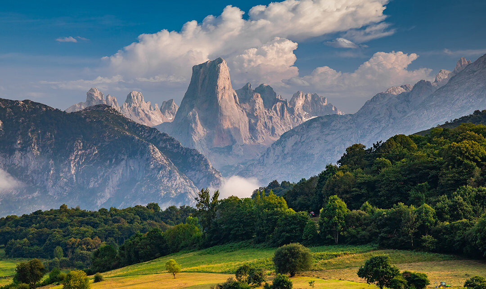
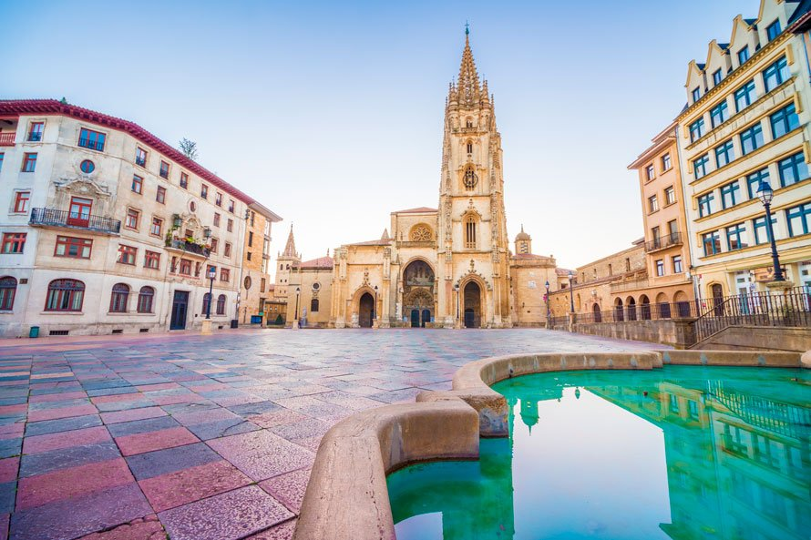

El Principado de Asturias (en asturiano, Principáu d'Asturies; en eonaviego, Principao d'Asturias) es una comunidad autónoma uniprovincial de España, con una población de 1 028 244 habitantes (INE 2018). Bañada al norte por las aguas del mar Cantábrico, limita al oeste con la provincia de Lugo (Galicia), al sur con la provincia de León (Castilla y León) y al este con Cantabria. Recibe el nombre de Principado por razones históricas, al ostentar el heredero de la corona de Castilla y, por extensión, de la corona de España el título nobiliario de príncipe de Asturias, establecido por Juan I de Castilla en el año 1388. Oviedo es, según el estatuto de autonomía, sede de las instituciones del Principado de Asturias; la ciudad más poblada de la comunidad es Gijón.
El actual espacio territorial asturiano coincide básicamente con el antiguo territorio de las Asturias de Oviedo, contiguas a las Asturias de Santillana. Con la división territorial de Javier de Burgos en 1833, la región de las Asturias de Oviedo se convirtió en la provincia de Oviedo, recibiendo una porción del territorio de las Asturias de Santillana, mientras el resto de las mismas se integró en la provincia de Santander, posterior comunidad autónoma de Cantabria.
Este espectacular espacio natural es uno de los 16 Parques Nacionales de España, el más antiguo de todos ellos. En él las posibilidades son infinitas y merece la pena dedicarle tiempo para conocer, al menos, sus lugares más representativos. Entre ellos, no debes perderte los Lagos y el Santuario de Covadonga, la Ruta del Cares, los pueblo de Bulnes y Sotresy como broche final, disfrutar de unas fantásticas vistas del mítico Pico Urriellu desde el Mirador del Pozo de la Oración o desde el de Pedro Udaondo, en Asiego. Si lo haces al atardecer podrás ver cómo se tiñe de color anaranjado, motivo por el que se le conoce como el Naranjo de Bulnes. Entenderás porque es uno de los mejores lugares que ver en Asturias.
La capital de la región es otro de los imprescindibles que ver en Asturias. Una ciudad con mucha historia en la que te recomendamos pasear por su casco histórico descubriendo los monumentos que alberga, entre los que destaca su la Catedral de San Salvador. Además, no debes marcharte de Oviedo sin visitar el conjunto de monumentos prerrománicos que son uno de los lugares declarados Patrimonio de la Humanidad en España: las iglesias de Santa María del Naranco, San Miguel de Lillo, San Julián de los Prados y la Cámara Santa de la catedral de San Salvador y la fuente de La Foncalada.
Este colorido pueblo asturiano es, sin ninguna duda, uno de los 100 pueblos más bonitos de España. Sus casas se sitúan en la ladera de una montaña formando un anfiteatro que mira al mar Cantábrico. Que sea tan colorido se debe a que históricamente usaban la pintura de sus barcos para pintar también la fachada de su casa. En la parte más alta del pueblo encontrarás un mirador desde el que disfrutar de una perspectiva diferente de esta villa, ¡te encantará!

A orillas del mar Cantábrico se encuentra la ciudad más poblada del Paraíso Natural, Gijón, otro de los lugares imprescindibles que ver en Asturias. Una ciudad preciosa en la que podrás disfrutar de bellos rincones y excelentes playas. En ella te recomendamos pasear por el barrio de Cimadevilla, un antiguo barrio de pescadores que sigue manteniendo parte de su encanto; las playas de San Lorenzo y Poniente y el Elogio del Horizonte. Además, en las afueras de la ciudad, no debes perderte Laboral Ciudad de la Cultura, un fantástico espacio, situado en la Universidad Laboral, en el que se respira arte y cultura.


He realizado una selección de diez alojamientos, todos de cuatro y cinco estrellas, en los que podrás hospedarte por un precio medio de 100 euros la noche en habitación doble si bien los precios suelen subir considerablemente en la época estival en una ciudad tan turística como Oviedo. Para ello hemos utilizado tres criterios principales, la ubicación, la relación calidad-precio y las valoraciones de los clientes.
Como no podía ser de otra manera, el Eurostars Hotel de la Reconquista encabeza nuestra selección de los mejores hoteles donde dormir en Oviedo. Un cinco estrellas que ocupa un edificio del siglo XVIII declarado Monumento Nacional en el centro histórico de Oviedo, a un paso del parque San Francisco. Se trata de un un hotel de estilo barroco, con habitaciones ricamente decoradas, en el que se cuida hasta el más mínimo detalle, como no podía ser de otra forma, en un hotel de lujo como éste. Cuenta con una fabulosa puntuación en Booking de 8,7, destacando los clientes su excelente ubicación. Su precio ronda los 120-200 euros por noche en habitación doble que resulta justificado por la exquisita atención de su personal y la calidad de sus instalaciones.
Acceder a la página web del Hotel Reconquista.Continuamos con nuestra guía de los mejores hoteles donde alojarse en Oviedo con otro cinco estrellas, esta vez de la cadena Barceló. Me gusta mucho este hotel por su diseño impactante y sus habitaciones modernas y elegantes. Está situado en el corazón de Oviedo, a 5 minutos a pie de la Catedral y del Teatro Campoamor por lo que su excelente ubicación ha sido reconocida por los clientes en sus valoraciones, lo que le ha valido una magnífica puntuación de 8,4 en Booking. Su precio ronda los 100-150 euros por noche en habitación doble, dependiendo de la temporada.
Acceder a la página web del Hotel Barceló.Seguimos con un cuatro estrellas, un hotel vanguardista de nueva construcción sobre un edificio de finales del siglo XIX ubicado en pleno centro de Oviedo, de hecho, los clientes destacan en sus valoraciones su excelente ubicación así como sus amplias habitaciones elegantemente decoradas. Todo ello sin olvidar su fantástico spa que personalmente me encanta, lo que ha permitido a este alojamiento donde dormir en Oviedo obtener una magnífica puntuación de 8,7 en Booking. El precio medio de las habitaciones es de 100 euros la noche en habitación doble
Acceder a la página web del Hotel Princesa.
Con esta lista de restaurantes donde comer en Oviedo queremos que disfrutes de una de las mejores gastronomías del mundo en los mejores locales de la ciudad, siempre combinándolos con la visita a la ciudad, que es una de las imprescindibles que no puedes perderte en Asturias. Con platos tradicionales y llenos de sabor como la fabada asturiana, que es un cocido elaborado con fabes que son alubias blancas, morcilla, cerdo y chorizo; el cachopo, que son dos grandes trozos de carne de ternera, rellenos de jamón y queso, que después se empanan y fríen; el pastel de cabracho, que es un plato salado, elaborado con un pescado o el famosísimo queso de Cabrales, queso azul elaborado con leche cruda de vaca, cabra u oveja, la gastronomía asturiana es sin lugar a dudas, uno de los grandes motivos por los que visitar esta ciudad, que es además uno de los lugares que ver en Asturias imprescindibles.
Conocido por ser uno de los restaurantes de Oviedo más recomendados, aquí podrás disfrutar de un gran producto, cocinado con amor y además, con un trato por parte del personal, excelente. Aunque su carta tiene muchísimas opciones, te recomendamos no perderte el cachopo, uno de los mejores de la ciudad que se suele pedir para compartir y además pedir algún entrante como el queso de Taramundi, el pastel de cabracho o los tortos y por supuesto, la fabada, que está exquisita.
Con varios premios por sus cachopos, Pichote La Sidrería es otro de los restaurantes donde comer en Oviedo más recomendados. Aunque tienen una carta muy extensa, te recomendamos no dejar de probar alguno de sus cachopos, ya que estos son los verdaderos protagonistas e incluso muchos locales dicen que es el mejor cachopo que puedes probar en Asturias.
Casa Fermin es otro de los restaurantes en Oviedo más conocidos y también uno de los más recomendados, tanto por viajeros como locales. Con una excelente relación calidad-precio, este es el lugar perfecto para disfrutar de una comida o cena especial a base de platos de vanguardia, pero que no pierden los sabores tradicionales, cocinados con amor y con productos de primera calidad.